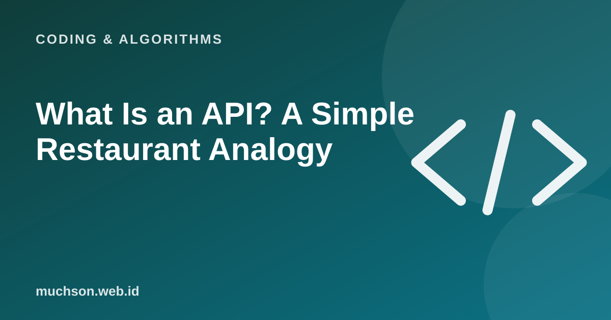

Home › Articles › Coding & Algorithms
Coding & AlgorithmsWhat Is an API? A Simple Restaurant Analogy
When a weather app shows the temperature on your phone, it does not measure it itself. It asks another service through an API. Understanding APIs opens the door to connecting almost any digital service.

The restaurant analogy
Text description of the diagram
- Customer: your app
- Waiter: the API: takes the order
- Kitchen: the server: prepares the data
- The dish: the response comes back
An API (Application Programming Interface) is a "menu" that describes what you can ask a service for and in what format the answer comes. On the web, you usually send a request to an address (URL) and receive a response containing data, often in JSON format.
An example request and response
GET https://api.example.com/weather?city=Malang
→ 200 OK
{
"city": "Malang",
"temp": 24,
"condition": "cloudy"
}A Python example
import requests
r = requests.get("https://api.example.com/weather", params={"city": "Malang"})
if r.status_code == 200:
data = r.json()
print(data["temp"])
else:
print("Failed:", r.status_code)Security
API keys and tokens are secrets. Store them in environment variables or a secrets manager, not in code that is uploaded to GitHub.
FAQ
What is the difference between an API and a database?
A database stores data. An API is a controlled doorway for requesting or changing that data.
What is REST?
A style of designing web APIs that uses URLs as resources and HTTP methods (GET, POST and so on) as actions.
Are all APIs free?
Many are free with usage limits, and many are paid. Check the terms and limits.